to bring 2D Drawer window which can also be used to start solving the
system you entered interactively. You can open few windows by clicking this
button multiple times.
to bring 2D Drawer window which can also be used to start solving the
system you entered interactively. You can open few windows by clicking this
button multiple times.
Click to bring 2D Drawer window which can also be used to start solving the
system you entered interactively. You can open few windows by clicking this
button multiple times.
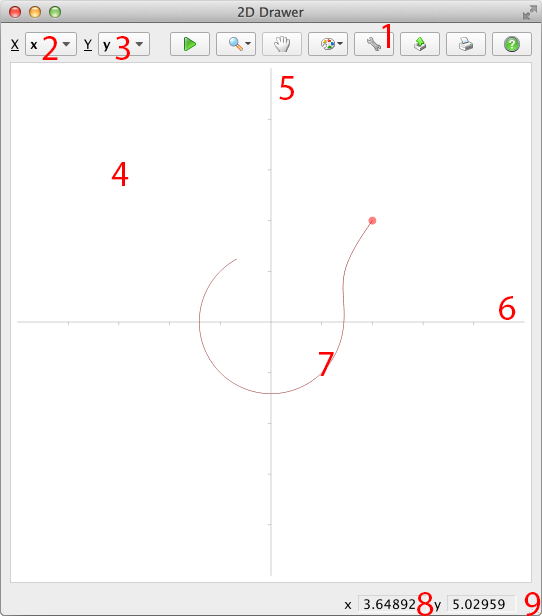
Click “Run froim point” button to enter the mode (mouse cursor will be changed accordingly). Click on a plain where you want to run new solution from. You should get something like this:
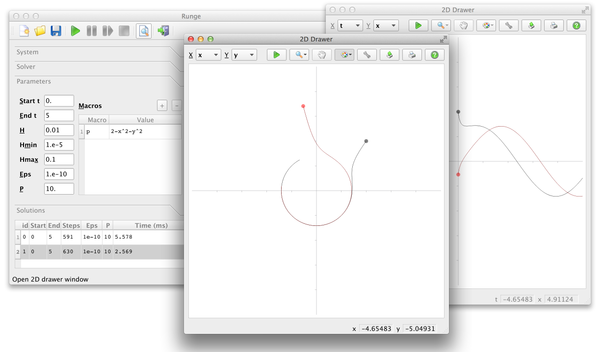
Note that new solution gets added to the main window list and it’s also drawn on every other drawer open.
You can quickly create a set of solutions by clicking at different points:
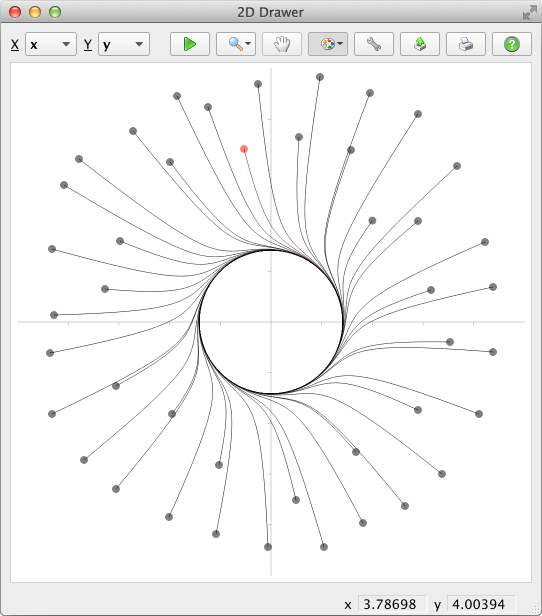
Every solution has a first point where independent variable 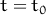. It’s marked by a small circle called “handle”:
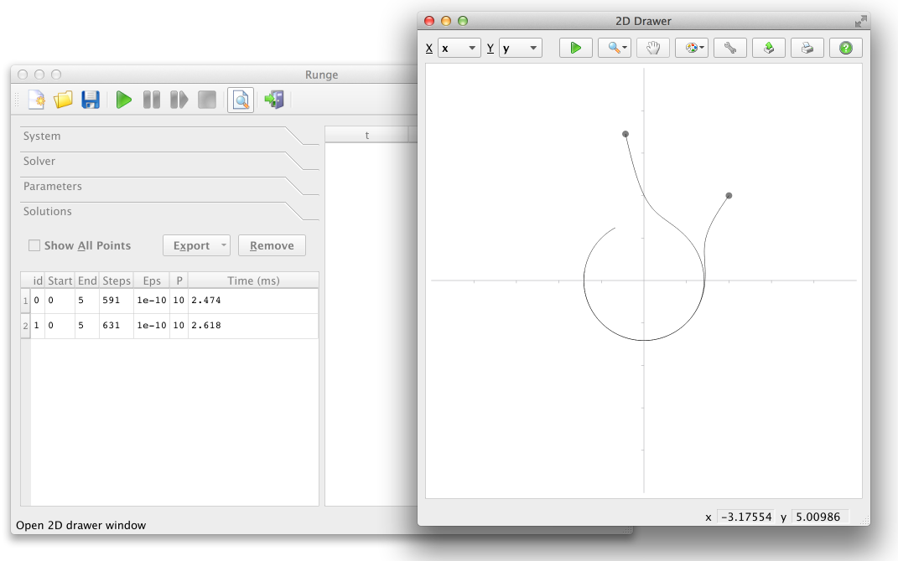
Click it to select:
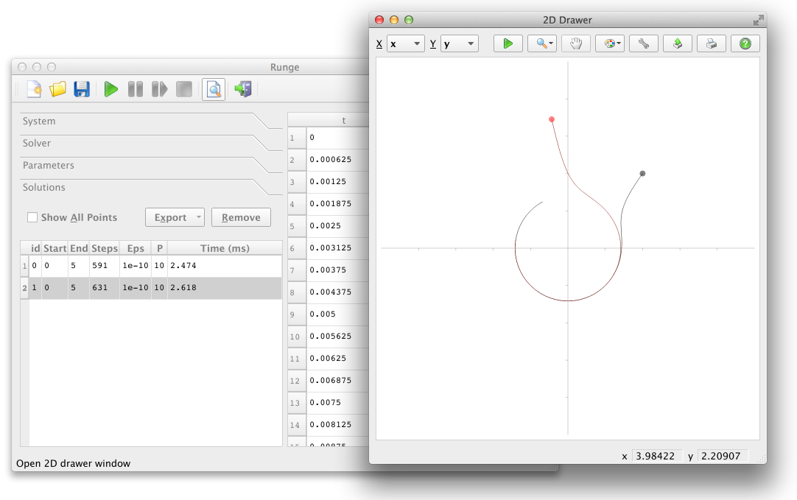
Note how it gets selected in main window (it works in both ways — you can select it in the list as well). You can explore, export and remove selected solution.
Selected solution is marked by different color for each second step. You choose the color using the color menu (since version 1.1, see below). Sometimes it’s handy to observe how steps change:
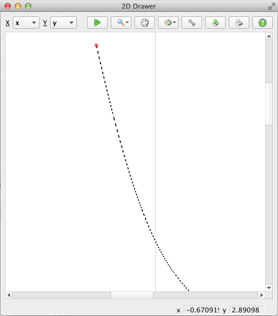
Click Zoom button to bring zoom menu
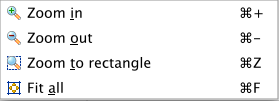
Select Zoom In or press Ctrl + combination to increase the drawing in 2:1 ratio:
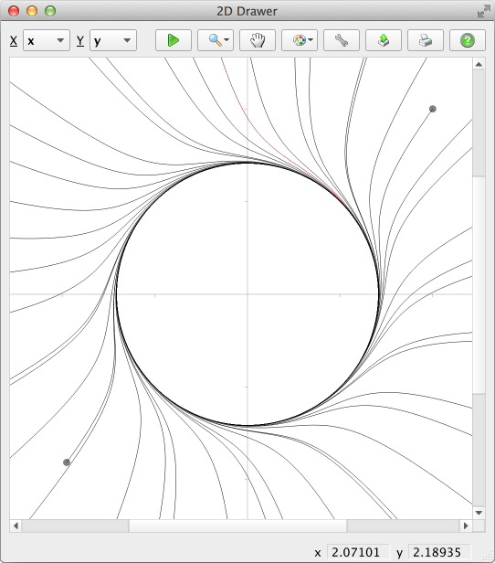
Zoom in level is virtually endless. Use “Zoom Out” to unzoom (Ctrl –). Use “Zoom to rectangle” (Ctrl Z) to select a rectangle by mouse. This rectangle would be scaled to. Use “Fit all” (Ctrl F) to show everything.
Click Pan button to enter Panning mode (mouse cursor changes). You can drag your drawing for exploring its different parts. Panning is available only when there is something out of window borders.
Click Palette button to bring the color menu:
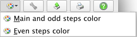
By selecting first item you can:
Please note that said above is also valid for all odd steps.
By selecting second item you can:
For example:
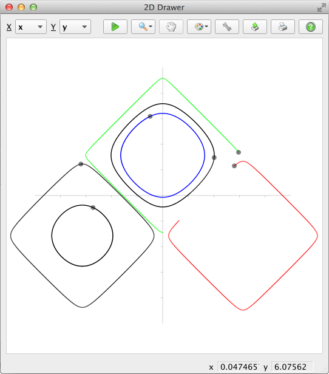
Click Drawer Settings button to bring settings window:
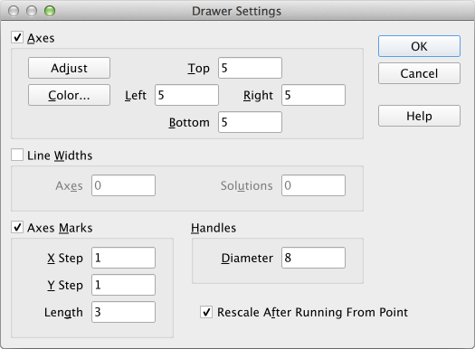
Here you can:
Click Export to File button to open Export window:
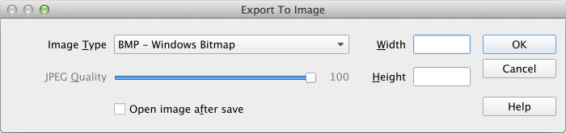
Here you can:
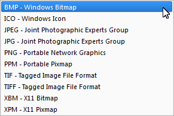
This list is platform-dependent.
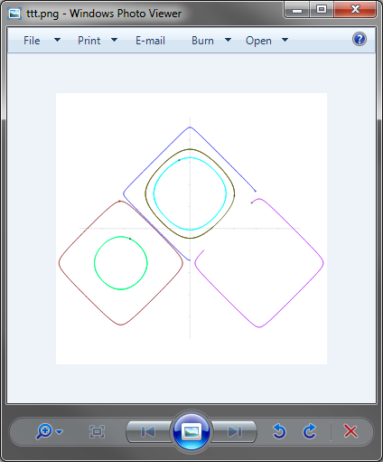
Here is 300x300 result sample is shown:
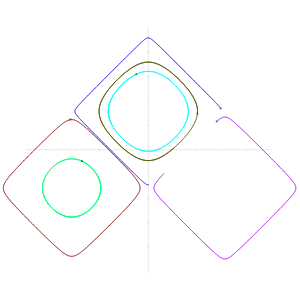
Click Print button 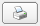 to open Print to Document/Paper window:
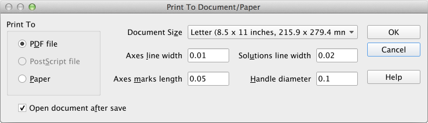
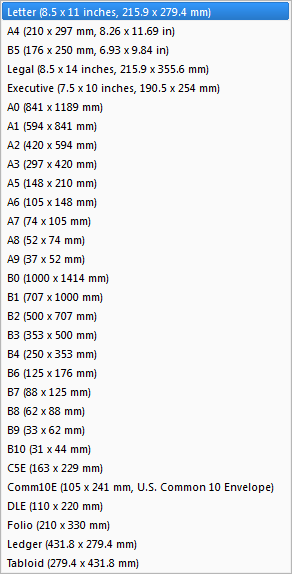
This list is platform-dependent.
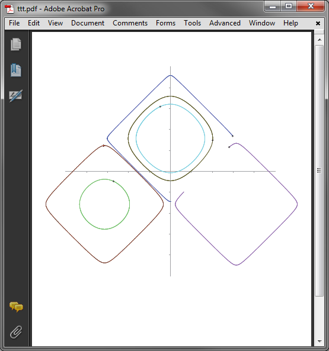
Click Help button to open Runge Manual.